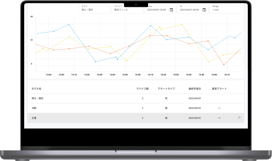
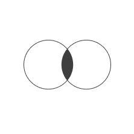
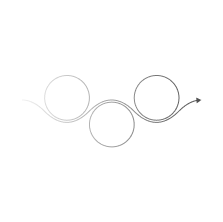
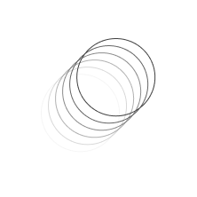

Progrative

プラン

Basic
- 3人まで管理画面利用可能
- 1サイトまで解析可能
- リーチ回数測定
- エンゲージメント率測定
- インプレッション数測定
- サイト遷移計測

Business
- 20人まで管理画面利用可能
- 5サイトまで解析可能
Basicプランの内容に加え
- 各測定のタイマー機能
- アラート機能
- エクスポート機能
- 測定ログを無制限に記録

Expert
- 100人まで管理画面利用可能
- 無制限にサイト解析可能
Businessプランの内容に加え
- Twitter連携 & 分析
- Instagram連携 & 分析
- YouTube連携 & 分析
※TikTokは今後対応予定
お知らせ
2025/04/01
お知らせ
2024/03/28
ブログ
2024/03/16
ブログ
2024/03/16
お知らせ
2024/02/10
お知らせ